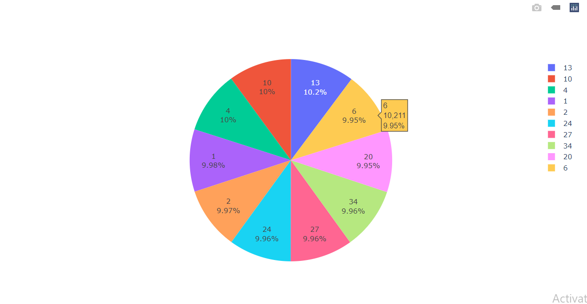
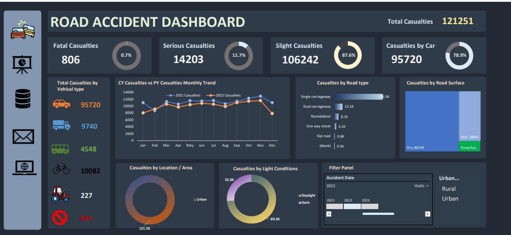
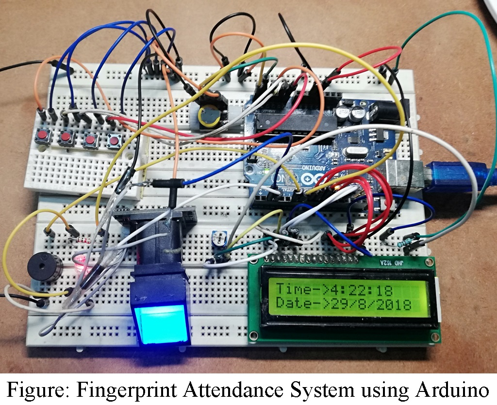

Viswanadh Pinisetti Portfolio
Fresher skilled in Python, Excel, MySQL and Web Development @viswanadhpinisetti
About
Hello I'm Viswanadh Pinisetti,
I am a motivated and dedicated individual with a strong desire to channelize my acquired knowledge, skills, and abilities into delivering value-added performance. Currently pursuing a Bachelor of Technology degree from Vishnu Institute Of Technology with a CGPA of 8.26, I have a solid foundation in technical skills, including Python, Java, HTML, CSS, JavaScript, MS Office, and SQL for database management.
My educational journey reflects my commitment to academic excellence. I am always keen on enhancing my skills through self-learning, observation, and a continuous pursuit of knowledge.I have practical experience in the field, having developed a Biometric Attendance System using IoT, incorporating fingerprint-based attendance with an Arduino board. My interests extend beyond the technical realm; I have a passion for photography, love playing cricket, and am fluent in Telugu, English, and Hindi.
In the professional sphere, I have completed internships in JAVA Development at Oasis Infobyte, Robotics at ARC, and Data Analytics through a virtual internship. Additionally, I gained insights into Cyber Security during an internship at Cisco. My certifications in Python Programming, ARC, British Council (English Strokes), and Career Strokes demonstrate my commitment to continuous skill development. I've also explored diverse areas, earning certifications in JAVA and completing Fullstack web development at Skolar. I've applied my skills to practical projects, including the development of an IoT-based Biometric Attendance System and data analysis projects such as Walmart data analysis using SQL and Road accident data analysis using MS Excel.
I am enthusiastic about contributing my skills and expertise to a dynamic organization, bringing forth my best potential for mutual growth and success.
I am currently exploring career opportunities that enable me to leverage my skills and talents to contribute significantly to a company's advancement while offering a platform for personal and professional growth. My conviction in the profound influence of data-driven insights drives my eagerness to apply my expertise in technology and data analytics to create a positive impact. In conclusion, I assert that the details presented in this resume are precise to the best of my knowledge, underscoring my sincere commitment to my field of expertise.
My Projects
On the basics of what I have learnt, I have worked and completed the following Projects.
Walmart Sales Data Analysis using MySQL
This project aims to explore the Walmart Sales data to understand top performing branches and products,sales trend of different products,customer behaviour.
View my project on my github

Dashboard of Overview of Road Accidents in UK using MS Excel
Created a dashboard on Road Accidents in UK in the year 2021 & 2022 by using MS Excel.
View my project on my github

Dashboard of Biometric attendance system using arduino
This project is used to collect a data regarding presenties.

Elsewhere
© Untitled. All rights reserved. Design: HTML5 UP.